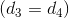
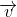
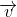

Vectori în plan
Să începem acest capitol cu definirea a câtorva noțiuni:
Definiția G0: Punct și dreaptă
- Punctul este o noțiune fundamentală în geometrie, care desemnează o entitate fără nici o dimensiune. Cu alte cuvinte, punctul este figura geometrică, care se aseamănă cu o urmă lăsată de un creion pe hârtie. Cu ajutorul punctului geometric adimensional se pot defini drepte (având o dimensiune), plane (având două dimensiuni), spații (având trei dimensiuni) și hiperspații (patru sau mai multe dimensiuni). Punctul se notează cu literele mari ale alfabetului: .
- Dreapta este formtă dintr-o mulțime de puncte, numite puncte coliniare. Dreapta poate fi comparată cu un fir intins; ea este nemărginită și se notează cu literele mici ale alfabetului: .
Definiția G1: Direcția dreptei d
Fie mulțimea punctelor dintr-un plan și o dreaptă din plan.
Mulțimea formată din dreapta  și toate dreptele paralele cu această dreaptă formează direcția dreptei .
și toate dreptele paralele cu această dreaptă formează direcția dreptei .
.jpg)
După cum observăm și în figura de mai sus, două drepte au aceeași direcție dacă sunt paralele sau dacă acestea coincid .
Segment orientat
Înainte de a vorbi despre segmente orientate este necesar să știm care este direcția segmentului.
.jpg)
După cum putem observa în figura de mai sus, este un segment, iar dreapta o vom numi dreapta suport a segmentului .
Atunci, direcția segmentului , , va coincide cu direcția dreptei suport .
Observație:
În figura de mai sus mai putem observa că segmentele , , au aceeași direcție, deoarece dreptele lor suport sunt paralele sau coincid.
O dreaptă, pe lângă direcție, poate să aibă și un sens, astfel: fie dreapta și  , respectiv
, respectiv  , două puncte distincte fixate pe dreaptă. Putem să avem astfel două sensuri de parcurgere a dreptei și anume: de la spre și de la spre .
, două puncte distincte fixate pe dreaptă. Putem să avem astfel două sensuri de parcurgere a dreptei și anume: de la spre și de la spre .
.jpg)
Conform cu cele spuse mai sus, ne este ușor să înțelegem ce este un segment orientat.
Definiția G2: Segment orientat
O pereche ordonată de puncte, notată , o vom numi vector legat sau segment orientat dacă avem precizat și sensul de parcurgere.
Segmentul orientat se notează astfel: .

Punctul se numește punctul de aplicație (originea) iar punctul vârful (extremitatea) segmentului orientat .
Observație:
Doi vectori legați care au aceeași direcție pot avea sensuri opuse, , sau pot avea același sens, .

Fie , doi vectori legați.
Spunem că ei sunt egali dacă originile lor coincid  și extremitățile lor, de asemenea, coincid .
și extremitățile lor, de asemenea, coincid .
Atunci când vorbim despre normă, modul sau lungimea vectorului ne referim la lungimea propriu-zisă a segmentului orientat , pe care o vom nota sau .
Observații:
- Vectorul nul este vectorul în care originea corespunde cu extremitatea și are lungimea
 : .
: . - Vectorul care are lungimea
 se numește vector unitate sau versor.
se numește vector unitate sau versor.
Relația de echipotență
Definiția G3: Vectori echipotenți
Vom spune că vectorii legați și sunt echipolenți, dacă au același sens, același modul și aceeași direcție.
Relația de echipotență dintre doi vectori se notează astfel:
.
Proprietăți ale relației de echipotență
Fie vectorii și , care sunt echipotenți, .
Propoziția G4: Proprietăți ale relației de echipotență
Această relație de echipolență are următoarele proprietăți:
- este reflexivă, adică vectorul este echipotent cu el însuși și notăm astfel:
.
- este simetrică:
Dacă , atunci ne rezultă că .
- este tranzitivă:
Avem că , dar , de unde ne rezultă că .
Vectori liberi
Definiția G5: Vector liber
Vectorul liber este mulțimea segmentelor orientate care au: aceeași direcție, același sens și același modul.
Altfel spus, este mulțimea segmentelor orientate echipolente cu un segment orientat fixat.
Acești vectorii îi vom nota cu litere mici: ,  ,  sau , dacă vectorul este determinat de segmentul orientat .
,  sau , dacă vectorul este determinat de segmentul orientat .
Observație:
Doi vectori liberi sunt egali dacă: au aceeași direcție, același sens și același modul.
Exemplu:
Fie  un pătrat, reprezentat în figura de mai jos. Vom scrie două perechi de vectori liberi egali în acest pătrat.
un pătrat, reprezentat în figura de mai jos. Vom scrie două perechi de vectori liberi egali în acest pătrat.

După cum putem vedea în imaginea de mai sus, sau , pentru că dreptele lor suport sunt pararele, deci au aceeași direcție, au același sens de la stânga spre dreapta, respectiv de jos în sus și același modul, deoarece laturile unui pătrat sunt egale.
Tot în imaginea de mai sus putem spune despre vectorii și că sunt ortogonali, adică au direcțiile perpendiculare.
Vectori opuși
O altă noțiune importantă este aceea de vectori opuși.
Definiția G6: Vectori opuși
Spunem că vectorii și se numesc vectori opuși, dacă:
- au aceeași direcție;
- au sensuri opuse;
- au aceeași lungime.
Cu alte cuvinte, vectorii și sunt opuși, dacă au coordonatele opuse, adică și .
Exemplu:
Pentru a înțelege mai bine această noțiune vom lua un triunghi  și mijlocul laturii
și mijlocul laturii ![[BC]](../media/webbooks/616/4860/images/equations/jcah8lvjdldpnm_tlpib_q==.gif) .
.

Vom spune că vectorii și sunt opuși, deoarece ei au aceeași direcție, același modul, însă au sensuri contrare.
Vom nota astfel:
.
Vectori coliniari
Definiția G7: Vectori coliniari
Doi vectori care au aceeași direcție se numesc vectori coliniari. Altfel, ei sunt vectori necoliniari.

În figura de mai sus putem observa că vectorii și sunt coliniari, resprectiv vectorii și sunt necoliniari, ei având alte direcții.